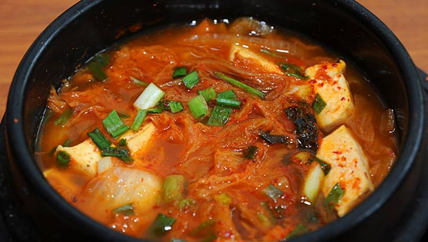

INGREDIENTS
6 tablespoons olive oil
3 medium yellow onion, chopped
9 garlic cloves, minced
3 pounds cremini mushrooms, cleaned and sliced
3 tablespoons soy sauce (I used Bragg's Amino Acids)
3 tablespoon Worcestershire sauce (vegan please)
about 3 teaspoons coarse ground black pepper
9 cups vegetable broth
salt to taste
For the Cashew Cream:
1 1/2 cup raw cashews
1 1/2 cup water
INSTRUCTIONS
*Substitute Cashew Cream with 3/4 cup half and half if you don't care about it being vegan, or 8 ounces of silken tofu if you do.
1. In a large pot, heat olive oil over medium heat. Add onions to hot oil and saute until translucent and slightly browned, about 5 minutes. Add garlic, stir, and cook for 1 minute more.
2. Add the mushrooms, soy sauce and Worcestershire sauce and cook until mushrooms are cooked and broken down, about 5 minutes. Stir occasionally.
3. Add cracked pepper and vegetable stock and cook at a simmer until mushrooms are completely soft. This took me about 10 to 15 minutes.
4. While the soup simmers, prepare the cashew cream. In a blender, combine raw cashews and water. Blend on high until smooth. Pour into a measuring cup and set aside.
5. When mushrooms are cooked through and soft, puree the soup with an immersion blender.
(If you don't have an immersion blender, add about one third of the soup to a regular blender.
Hot soup rises high in the blender so definitely be careful how high you fill the blender.
Blend soup on low, increasing the speed to high, until no large mushroom chunks remain.
Pour blended soup into a clean pot or large bowl, and turn the heat on medium low. Blend the remaining soup in batches).
*If using silken tofu instead of cashew cream. Blend the silken tofu in with the mushrooms and broth.
6. Add the cashew cream to the blended soup and stir to incorporate.
7. Enjoy!

⇒To get more instructions. Please watch the guide video behind